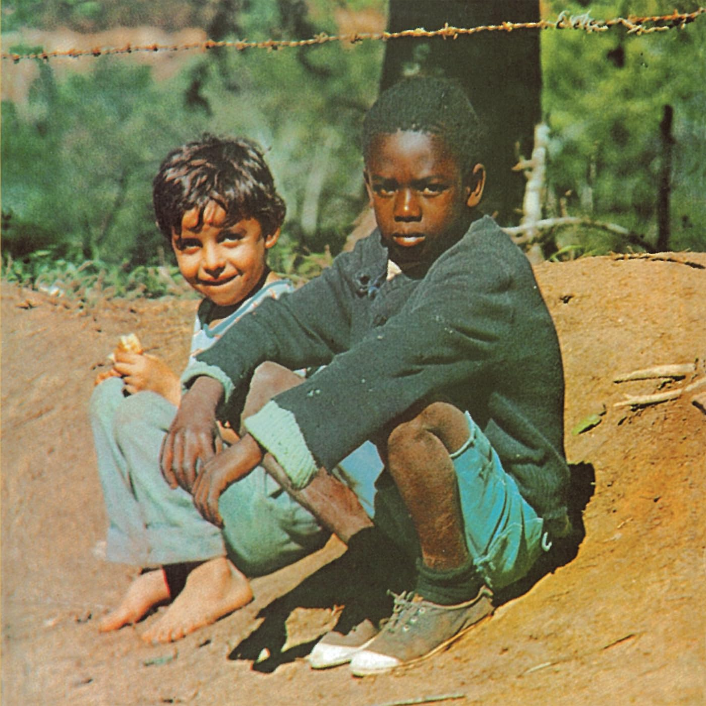

Clube da Esquina (1972)
Milton Nascimento & Lô Borges
As iconic a cover art as they come
Context and whatnot will go here.
These info boxes will contain information that is crucial to understanding the song, like cultural differences or something.
T/L Note: These will be some assorted translation notes and whining about translation being hard...
00:11
Through sun and rain, you dreamed
Com sol e chuva, você sonhava
00:21
That it would get better later
Que ia ser melhor depois
00:24
You wanted to be the great hero of the roads
Você queria ser o grande herói das estradas
00:26
Everything that you wanted to be
Tudo que você queria ser
00:40
I know a secret: you're afraid
Sei um segredo: você tem medo
00:50
Now you wish you could go back
Só pensa agora em voltar
00:53
You don't speak of the boot and ring of Zapata
Não fala mais da bota e do anel de Zapata
00:56
Everything that you should be—without fear
Tudo que você devia ser—sem medo
01:14
You don't remember me anymore
Não se lembra mais de mim
01:16
You didn't want me speaking of everything
Você não quis deixar que eu falasse de tudo
01:19
Everything that you could ever be—on the road
Tudo que você podia ser—na estrada
01:37
Ah! Sun and rain on your road
Ah! Sol e chuva na sua estrada
01:46
But it doesn't matter, there's no problem
Mas não importa, não faz mal
01:49
You still think and it's better than nothing
Você ainda pensa e é melhor do que nada
01:52
Everything that you're able to be—or nothing
Tudo que você consegue ser—ou nada
02:09
It doesn't matter, there's no problem
Mas não importa, não faz mal
02:11
You still think and it's better than nothing
Você ainda pensa e é melhor do que nada
02:14
Everything that you're able to be—or nothing
Tudo que você consegue ser—ou nada
00:01
To those that want let themselves go
Para quem quer se soltar
00:03
I invent the pier
Invento o cais
00:09
I invent more than what loneliness gives me
Invento mais que a solidão me dá
00:17
I invent a shining new moon
Invento lua nova a clarear
00:24
I invent love
Invento o amor
00:27
And I know the pain of throwing myself
E sei a dor de me lançar
00:39
I wanted to be happy
Eu queria ser feliz
00:45
I invent the sea
Invento o mar
00:48
I invent in me the dreamer
Invento em mim o sonhador
00:56
To those that want to follow me
Para quem quer me seguir
01:07
I want more
Eu quero mais
01:11
I have the path to what I've always wanted
Tenho o caminho do que sempre quis
01:17
And a boat ready to set sail
E um saveiro pronto pra partir
01:25
I invent the pier
Invento o cais
01:29
And know the time to throw myself
E sei a vez de me lançar
00:30
Things that we forget to say
Coisas que a gente se esquece de dizer
00:38
Phrases that the wind sometimes comes to remind me
Frases que o vento vem as vezes me lembrar
00:46
Things that went a long time unsaid
Coisas que ficaram muito tempo por dizer
00:53
Tirelessly they fly in the song of the wind
Na canção do vento não se cansam de voar
01:06
You catch the blue train, the sun on your head
Você pega o trem azul, o sol na cabeça
01:14
The sun catches the blue train, you on its head
Você pega o trem azul, o sol na cabeça
01:21
The sun on your head
O sol na cabeça
01:33
Things that we forget to say
Coisas que a gente se esquece de dizer
01:39
Phrases that the wind sometimes comes to remind me
Frases que o vento vem as vezes me lembrar
01:47
Things that went a long time unsaid
Coisas que ficaram muito tempo por dizer
01:54
Tirelessly they fly in the song of the wind
Na canção do vento não se cansam de voar
02:08
You catch the blue train, the sun on your head
Você pega o trem azul, o sol na cabeça
02:15
The sun catches the blue train, you on its head
Você pega o trem azul, o sol na cabeça
02:22
The sun on your head
O sol na cabeça
(instrumental)
(instrumental)
03:04
You catch the blue train, the sun on your head
Você pega o trem azul, o sol na cabeça
03:11
The sun catches the blue train, you on its head
Você pega o trem azul, o sol na cabeça
03:19
The sun on your head
O sol na cabeça
03:30
You catch the blue train, the sun on your head
Você pega o trem azul, o sol na cabeça
03:37
The sun catches the blue train, you on its head
Você pega o trem azul, o sol na cabeça
03:45
The sun on your head
O sol na cabeça
T/L Note: I had a tough time translating this, since it's some pretty abstract poetry. I hope it's still understandable.
00:04
What would you say of this thing your feet can no longer reach?
O que vocês diriam dessa coisa que não dá mais pé?
00:09
What would you do to escape the tide?
O que vocês fariam pra sair dessa maré?
00:12
What was a dream now turns to dirt
O que era sonho vira terra
00:17
Who will be the first to answer me?
Quem vai ser o primeiro a me responder?
00:23
Leave this city, have life where it is
Sair dessa cidade, ter a vida onde ela é
00:26
Climb new mountains, search for diamonds
Subir novas montanhas, diamantes procurar
00:30
At the end of the road and of the dust
No fim da estrada e da poeira
00:34
The river with its fruit will feed me
Um rio com seus frutos me alimentar
T/L Note: The more appropriate term is, of course, "Romani" or "Romani people." This is not the term used in the original song title, however, and I felt it would be disingenuous to translate it the other way.
00:16
If you want, I'll dance with you
Se você quiser, eu danço com você
00:21
On the dust of the road
No pó da estrada
00:24
Powder, dust, wind
Pó, poeira, ventania
00:28
If you put your foot on the road
Se você soltar o pé na estrada
00:34
Powder, dust
Pó, poeira
00:36
Whatever you dance, I'll dance with you
Eu danço com você o que você dançar
00:48
If you let the sun shine on your green hair
Se você deixar o sol bater nos seus cabelos verdes
00:56
Sun, dew, gold and silver
Sol, sereno, ouro e prata
01:01
Come out and follow me
Sai e vem comigo
01:04
Sun, seed, midnight
Sol, semente, madrugada
01:08
I live in any part of your heart
Eu vivo em qualquer parte do seu coração
01:21
If you let your heart beat without fear
Se você deixar o coração bater sem medo
01:29
If you let your heart beat without fear
Se você deixar o coração bater sem medo
01:36
If you let your heart beat without fear
Se você deixar o coração bater sem medo
01:45
If you want, I'll dance with you
Se você quiser, eu danço com você
01:51
My name is cloud
Meu nome é nuvem
01:54
Powder, dust, movement
Pó, poeira, movimento
01:57
My name is cloud
O meu nome é nuvem
02:01
wind, windflower
Ventania, flor de vento
02:04
Whatever you dance, I'll dance with you
Eu danço com você o que você dançar
02:17
If you let your heart beat without fear
Se você deixar o coração bater sem medo
02:25
If you let your heart beat without fear
Se você deixar o coração bater sem medo
02:33
If you let your heart beat without fear...
Se você deixar o coração bater sem medo...
"Gabriela Cravo e Canela" (Gabriela Clove and Cinnamon) is a famous novel by Brazilian writer Jorge Amado. This song makes reference to the themes and imagery of the novel, as well as Jorge Amado's body of work in general and the culture of his home state of Bahia. You don't need to read the book to understand the song (though I still recommend it; it's a good novel!)
T/L Note: The note on the previous song still applies.
00:31
Hey, morena, who seasoned it?
Ê, morena, quem temperou?
00:33
Gypsy, who seasoned it?
Cigana, quem temperou?
00:35
The smell of clove
O cheiro do cravo
00:37
Gypsy, who seasoned it?
Cigana, quem temperou?
00:39
Morena, who seasoned it?
Morena, quem temperou?
00:40
The color of cinnamon
A cor de canela
00:43
The dark moon
A lua morena
00:44
The dance of the wind
A dança do vento
00:45
The belly of the night
O ventre da noite
00:46
The morning sun
O sol da manhã
00:50
The gypsy rain
A chuva cigana
00:51
The dance of the rivers
A dança dos rios
00:52
The cocoa honey
O mel do cacau
00:53
The morning sun
O sol da manhã
00:56
Hey, morena, who seasoned it?
Ê, morena, quem temperou?
00:57
Gypsy, who seasoned it?
Cigana, quem temperou?
00:58
The smell of clove
O cheiro do cravo
01:01
Gypsy, who seasoned it?
Cigana, quem temperou?
01:03
Morena, who seasoned it?
Morena, quem temperou?
01:04
The color of cinnamon
A cor de canela
01:26
The dark moon
A lua morena
01:27
The dance of the wind
A dança do vento
01:28
The belly of the night
O ventre da noite
01:29
The morning sun
O sol da manhã
01:32
The gypsy rain
A chuva cigana
01:33
The dance of the rivers
A dança dos rios
01:34
The cocoa honey
O mel do cacau
01:35
The morning sun
O sol da manhã
01:37
Hey, morena, who seasoned it?
Ê, morena, quem temperou?
01:39
Gypsy, who seasoned it?
Cigana, quem temperou?
01:41
The smell of clove
O cheiro do cravo
01:44
Gypsy, who seasoned it?
Cigana, quem temperou?
01:45
Morena, who seasoned it?
Morena, quem temperou?
01:47
The color of cinnamon
A cor de canela
(repeats until end)
(repete até o final)